원문: Project Glasswing: Securing critical software for the AI era
Anthropic에서 Project Glasswing이라는 이름의 프로젝트를 발표했습니다. Claude Mythos라는 모델의 프리뷰 버전이 공개된 건데요, Anthropic 내부에서는 이 모델의 해킹/보안 취약점 패치 능력이 굉장히 높다고 평가하고 있습니다. 그리고 여러 유명 대기업들(Google, AWS, Apple, Cisco, Linux Foundation, Microsoft, NVIDIA 등)도 이 사실에 일정 부분 동의를 했는지, Glasswing 프로젝트에 동참하여 중대한 소프트웨어의 취약점을 함께 개선하기로 한 모양입니다.
먼저 원문 도입부의 분위기를 가장 잘 전달하는 hero 영상부터 보시죠.
“지금 행동하지 않으면 공격자가 먼저 이 능력을 가져간다”는 위기감이 이 한 장면에 압축돼 있다.
Glasswing이 뭔가요?
Glasswing은 말 그대로 “유리날개”라는 뜻입니다. Anthropic이 지향하는 투명성에 대한 의지를 담음과 동시에, 시스템 내부에 오랫동안 존재해 왔지만 아직까지 아무도 발견하지 못한 여러 보안 취약점을 찾아내고 해결해 나가겠다는 의미를 담고 있습니다.
원문 서두의 메시지는 꽤 날카롭습니다.
- Claude Mythos Preview는 아직 일반 공개되지 않은 범용 프런티어 모델이다.
- 그런데 이미 모든 주요 운영체제와 브라우저를 포함한 핵심 소프트웨어에서 수천 건의 고위험 취약점을 찾아냈다고 한다.
- 일부는 인간이 방향을 잡아주지 않아도 취약점 확인에서 익스플로잇 개발까지 자율적으로 연결했다.
- 그래서 Anthropic은 공개 경쟁보다 먼저 방어적 사용을 위한 협력망을 만들었다.
핵심은 이겁니다. Glasswing은 “AI를 보안에 써보자”가 아니라, AI가 이미 공격 효율을 뒤집어놓을 수 있으니, 방어 측이 먼저 배치해야 한다는 문제 정의입니다.
소프트웨어에는 원래 결함이 있었지만, 비용 구조가 바뀌었다

- 탐지 비용 하락 — 숙련 연구자의 수작업 일부가 모델 추론 비용으로 대체된다.
- 공격 전문성의 하향 평준화 — 상위권 연구자만 할 수 있던 분석이 더 넓게 복제 가능해진다.
- 방어 시간의 붕괴 — 취약점 발견에서 악용까지 걸리는 시간이 급격히 줄어든다.
- 핵심 인프라 동시 노출 — OS, 브라우저, 커널, 미디어 라이브러리 같은 기반 계층이 한꺼번에 위험해진다.
원문이 병원, 학교, 금융 시스템, 물류, 에너지 인프라까지 언급하는 이유가 여기 있습니다. AI가 바꾸는 건 보안팀의 생산성이 아니라, 사회 기반 소프트웨어의 노출 속도와 악용 속도 그 자체입니다.
Mythos Preview가 실제로 찾아낸 것들
이제 Anthropic이 오늘 공개한 상세 리포트의 핵심 사례들을 살펴보겠습니다.

- 27년 동안 숨겨져 있던 OpenBSD 취약점 — 가장 보안이 철저한 운영체제 중 하나로 명성 높은 OpenBSD에서 27년 된 취약점을 찾아냈습니다. 공격자가 단순히 연결하는 것만으로 해당 OS가 설치된 모든 기기를 원격으로 다운시킬 수 있는 중대한 문제였다고 합니다.
- 자동화 테스트를 500만 번이나 통과한 FFmpeg 16년 된 취약점 — 비디오 인코딩/디코딩에 사용되는 FFmpeg에서 16년 된 취약점을 발견했는데, 비디오 프레임을 악의적으로 만들고 밀어넣을 수 있는 것으로, 기존 도구들로 자동화된 보안 테스트를 500만 번이나 거쳤음에도 잡아내지 못했던 문제였습니다.
- Linux kernel 취약점 체인 — 일반 권한에서 시스템 장악까지 이어지는 경로를 스스로 조합했습니다.
“취약점이 있었다”보다 중요한 건, 인간 리뷰와 자동화 테스트를 수십 년간 통과해 온 결함을 AI가 다시 끌어냈다는 사실입니다.
이 과정은 전부 Agentic하게 이루어졌다
이 부분이 정말 흥미로운데요. 운영자는 “이 프로젝트의 보안 취약점을 찾아줘!”라고만 요청한 뒤, 나머지 모든 것은 자율적으로 “정적 분석”, “동적 분석”을 통해 발견된 것입니다. 현재 Opus 4.6 모델 대비 월등히 높은 점수를 보여주고 있는 Mythos 모델의 Agentic 능력이 굉장히 높을 것이라는 걸 미루어 짐작할 수 있습니다.
아래 영상이 바로 이 과정을 보여줍니다. 단순 코드 리뷰 보조가 아니라, 발견→검증→익스플로잇→방어 대응이 하나의 파이프라인으로 압축되는 모습입니다.
취약점 확인에서 익스플로잇 개발까지 거의 자율적으로 이어진 사례. 스캐너를 잘 돌리는 시대가 아니라, AI가 공격 경로를 스스로 설계하는 시대가 온 것이다.
검증은 어떻게 했나?
Mythos 모델이 발견한 취약점들은 총 세 단계에 걸쳐 검증되었습니다.
- PoC 코드 생성 및 실행 — 취약점을 검증하기 위한 PoC(Proof of Concept) 코드를 만들고 실제로 실행해서 문제가 재현되는지 확인. 이 과정에서 실제 분석 도구들이 활용됨
- 평가자 페르소나 교차 검증 — 평가자 역할을 맡은 별도의 Mythos 에이전트가 교차 검증
- 인간 보안 전문가 최종 검증 — 마지막으로 사람 보안 전문가가 직접 확인
즉, 발견된 보안 취약점들은 꽤 신뢰할 만한 결과라는 겁니다.
벤치마크 수치도 같은 이야기를 한다

- Cybersecurity Vulnerability Reproduction — Mythos Preview 83.1% vs Opus 4.6 66.6%
- BrowseComp — Mythos Preview가 더 높은 점수를 기록하면서 토큰 사용량은 4.9배 적음
- SWE-bench, Terminal-Bench 2.0, Humanity's Last Exam 등에서도 전반적으로 높은 성능
Anthropic이 전달하려는 메시지는 분명합니다. 코딩 에이전트가 강해질수록 사이버 역량도 같이 올라간다는 것. 보안은 이제 모델 출시 후 부가 검토 항목이 아니라, 모델 경쟁 그 자체의 일부입니다.
누가 참여하고 있나
원문의 로고 묶음은 장식이 아닙니다. 어떤 산업 레이어가 Glasswing에 참여하는지, Anthropic이 어디를 “핵심 소프트웨어”로 보고 있는지 가장 압축적으로 보여줍니다.
레이어별로 정리하면 이렇습니다.
- 클라우드: AWS, Google, Microsoft
- 플랫폼·하드웨어: Apple, Broadcom, NVIDIA
- 보안 전문: Cisco, CrowdStrike, Palo Alto Networks
- 산업 사용자: JPMorganChase
- 오픈소스 거버넌스: Linux Foundation
- 모델 제공자: Anthropic
클라우드, 플랫폼, 칩, 보안 벤더, 금융권, 오픈소스 거버넌스가 동시에 들어간다는 점이 곧 “세계의 공유 공격 표면”이라는 원문 표현을 구체화합니다. Glasswing은 Anthropic 혼자 만든 연구 쇼케이스가 아니라, 실제 핵심 시스템을 운영하거나 보호하는 조직들이 함께 방어 워크플로를 시험하는 구조입니다.
운영 계획
Anthropic이 약속한 운영 포인트는 다음과 같습니다.
- 참여 조직 및 추가 40여 개 기관에 Claude Mythos Preview 접근권 제공
- 연구 프리뷰 기간 동안 최대 1억 달러 규모 사용 크레딧 지원
- 오픈소스 보안 조직에 직접 기부 400만 달러 집행
- 90일 이내 학습 내용과 수정 결과를 대외 보고
- 보안 기관과 함께 AI 시대 실무 권고안 작성 (취약점 공개 절차, 공급망 보안, secure-by-design, triage/패치 자동화 등)
Anthropic이 언급한 기술적 한계점
원문은 강력하지만, Anthropic 스스로도 인정한 한계점들이 몇 가지 있습니다. 이 부분이 오히려 이 발표의 신뢰도를 높여준다고 봅니다.
비용 문제가 만만치 않다. 이 취약점들을 발견하는 데 든 비용과 시간은 베스트 케이스 기준으로 약 하루, 수십 달러 정도라고 합니다. 다만 AI 모델의 확률적 추론 특성 때문에 베스트 케이스에 도달하기까지 동일한 프롬프트를 최대 약 1,000회 실행했고, 이는 약 20,000달러(한화 약 3천만 원)에 해당합니다. 물론 시스템이 고도화됨에 따라 이 비용은 많이 축소될 수 있겠지만, 당장 1~2년 안에는 다각적인/다회적인 보안 취약 분석을 해야만 보안상 견고한 소프트웨어를 구축할 수 있을 것 같습니다.
코드 레벨의 취약점에 한정된다. 이렇게 발견된 보안 취약점들은 모두 “코드에 내재된 취약점” 및 “코드를 실행했을 때 드러나는 기계적 취약점”을 의미합니다. 즉, 이 두 가지가 완벽하더라도 실제 런타임에서 사용자가 악의적인 마인드로 전혀 예상치 못한 입력들을 무차별적으로 주입할 때 일어나는 문제까지는 사전 파악이 어렵다는 뜻입니다. 이건 곧 레드팀 페르소나를 장착한 Agentic 모델이 별도로 개발될 수 있음을 시사하기도 합니다 (일반인들에게 풀리지는 않겠지만요).
발견 ≠ 추론 능력 증명. 이렇게 오래 묵혀진 취약점을 발견했다는 사실이 곧 Mythos 모델의 사고 능력이 굉장히 뛰어나졌다는 걸 완전히 증명하지는 않습니다. 유명하고 오랫동안 관리되어 온 소프트웨어라고 해도, 여기서 발견된 취약점과 유사한 케이스가 이미 해결된 다른 프로젝트는 분명 존재할 수 있으며, 이를 통해 어느 정도 학습된 패턴대로 취약점을 찾고 해결한 것일 수 있기 때문입니다.
앞으로의 전망
해킹하는 사람이 있으면 방어하는 사람도 있고, 그런 생태계 속에서 점점 더 고도화된 공격 수단이 등장하는 것처럼, 이제는 해킹 전쟁도 AI 모델들에 의해 이루어질 것 같습니다. 범용적인 다양한 취약점을 찾는 Mythos 같은 모델도 좋지만, 집요하게 한 가지 유형의 구멍만 찾아서 공격하는 경량형 모델들도 많이 생기지 않을까 싶네요.
현대 소프트웨어와 AI 에이전트 모두 오픈소스 위에 서 있기 때문에, 오픈소스 취약점은 곧 전체 공급망 취약점이기도 합니다. 관련해서 PyPI 공급망 공격 이후 — 오픈소스 보안의 새로운 전략과 현실적인 방어법도 함께 읽어보시면 맥락이 잘 이어집니다.
결국 AI 시대 보안의 승부는 “더 똑똑한 모델” 하나로 끝나지 않습니다. 누가 이 능력에 먼저 접근하는가, 어떤 코드베이스에 우선 적용하는가, 어떻게 검증하고 패치하는가 — 이 질문에 답할 수 있어야 강한 모델이 리스크가 아니라 방어 우위가 됩니다. Glasswing은 바로 그 운영 실험을 선언한 프로젝트입니다.